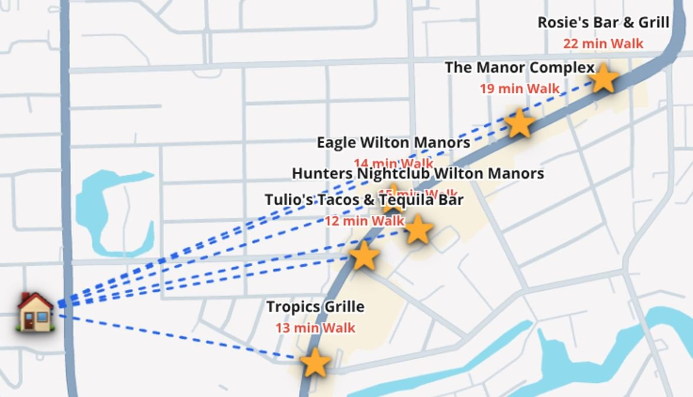
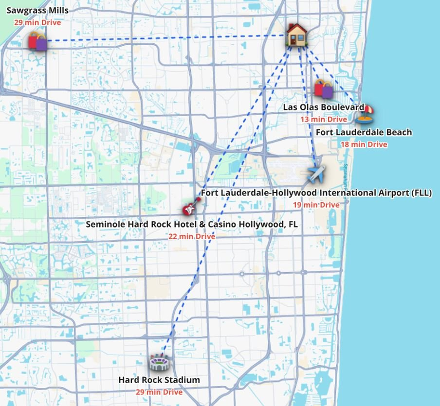
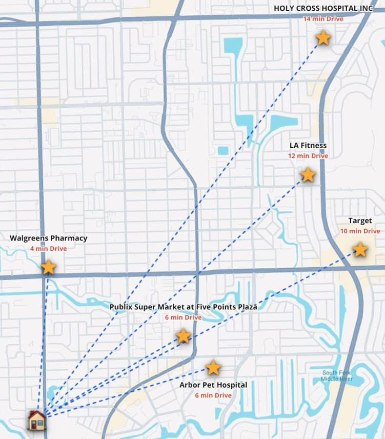

18 min

A celebrated mile of restaurants, cafés, galleries, and nightlife — woven through one of the most welcoming neighborhoods in South Florida. From Paradise Vacation Suites, the entire avenue unfolds on foot.
Encircled by 13 miles of navigable waterways, Wilton Manors is the only true Island City in South Florida — a small, walkable neighborhood tucked inside greater Fort Lauderdale.
Wilton Drive is its main artery: a tree-lined stretch of independent restaurants, cafés, art galleries, vintage shops, fitness studios, day spas, and nightlife venues, all packed into roughly one mile. Most of our guests park their car, walk to dinner, and don't drive again until checkout.
Paradise Vacation Suites sits a short, flat 10-minute walk (0.5 miles via NE 26th Street to NE 5th Avenue) from the heart of the Drive — close enough to be in the middle of everything, quiet enough to come home to a real night's sleep.

Step out the door, head a few blocks east, and Wilton Drive opens up around you. Within minutes you're at the heart of the action — a tightly packed strip of bars, restaurants, dance floors, and patios that gives the neighborhood its name and its energy.
Wilton Drive has long been known as the cultural center of South Florida's LGBTQ+ community, and that history shapes its character today: open, welcoming, festive, and unmistakably full of life. There's live music on the patio at Rosie's, late-night dancing at The Manor, craft tequila at Tulio's, and a quieter glass of wine waiting on a side street whenever you want it.
It's a stretch designed for walking — and once you start, you tend not to stop.

Wilton Manors has the second-highest concentration of same-sex households of any city in the United States — and a reputation, earned over decades, as one of the country's most genuinely welcoming places to visit.
That history is part of why guests come back. The bars, restaurants, galleries, and shops along Wilton Drive are largely independently and locally owned, many by long-time members of the LGBTQ+ community. The annual Stonewall Pride Parade draws tens of thousands of visitors each June, and the third-Saturday Art Walks turn the Drive into an open-air gallery.
You don't need to be part of any particular community to feel at home here. Wilton Manors simply holds the door open — and most of our guests, gay or straight, find that once they've stayed once, they keep coming back.



When you do feel like venturing out, you're in the geographic center of one of South Florida's most exciting metros. Las Olas Boulevard is a thirteen-minute drive. Fort Lauderdale's twenty-four miles of Atlantic beach are eighteen. The airport is under twenty.
The Seminole Hard Rock Casino & Hotel sits twenty-two minutes south. Hard Rock Stadium — home to the Miami Dolphins, Miami Open tennis, and major touring concerts — is twenty-nine. And Sawgrass Mills, one of the largest outlet shopping destinations in the country, is the same drive in the opposite direction.
Most of South Florida is reachable in under thirty minutes, but the rhythm of a stay here pulls in the other direction: arrive, settle in, and let the neighborhood take over.
A handful of destinations close enough to make a day of, far enough to feel like an excursion.


One of the things our long-stay guests appreciate most is how little planning their day needs. Groceries, pharmacy, fitness, the vet — the everyday infrastructure of a real neighborhood is all minutes away.
Walgreens is a four-minute drive. Publix at Five Points Plaza, six. Target and LA Fitness sit just east on Federal Highway. And if anything more serious comes up, Holy Cross Hospital is a quick fourteen minutes north.
It means you can settle in for a week, two weeks, a month — and feel like you actually live here.

Most of our guests book a few nights and end up planning their next return before they've even checked out. Wilton Drive has that effect.